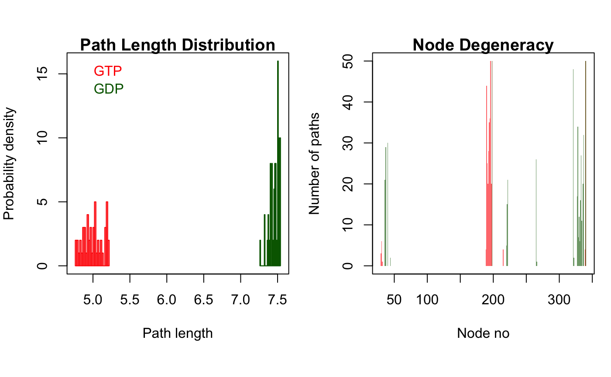

cnapath.RdFind k shortest paths between a pair of nodes, source and sink, in a correlation network.
cnapath(cna, from, to=NULL, k=10, collapse=TRUE, ncore=NULL, ...) # S3 method for cnapath summary(object, ..., pdb = NULL, label = NULL, col = NULL, plot = FALSE, concise = FALSE, cutoff = 0.1, normalize = TRUE, weight = FALSE) # S3 method for cnapath print(x, ...) # S3 method for cnapath plot(x, ...) # S3 method for ecnapath plot(x, ...)
| cna | A ‘cna’ object or a list of ‘cna’ objects obtained from
|
|---|---|
| from | Integer vector or matrix indicating node id(s) of source. If is matrix
and |
| to | Integer vector indicating node id(s) of sink. All combinations of
|
| k | Integer, number of suboptimal paths to identify. |
| collapse | Logical, if TRUE results from all source/sink pairs are merged with a single ‘cnapath’ object returned. |
| ncore | Number of CPU cores used to do the calculation. By default (NULL), use all detected CPU cores. |
| object | A ‘cnapath’ class of object obtained from
|
| pdb | A ‘pdb’ class of object obtained from |
| label | Character, label for paths identified from different networks. |
| col | Colors for plotting statistical results for paths identified from different networks. |
| plot | Logical, if TRUE path length distribution and node degeneracy will be plotted. |
| concise | Logical, if TRUE only ‘on path’ residues will be displayed in the node degeneracy plot. |
| cutoff | Numeric, nodes with node degeneracy larger than |
| normalize | Logical, if TRUE node degeneracy is divided by the total (weighted) number of paths. |
| weight | Logical, if TRUE each path is weighted by path length in calculating the node degeneracty. |
| x | A 'cnapath' class object, or a list of such objects, as obtained from function |
| ... | Additional arguments passed to igraph function
|
The function cnapath returns a (or a list of) ‘cnapath’
class of list containing following three components:
a list object containing all identified suboptimal paths. Each entry of the list is a sequence of node ids for the path.
a list object containing all identified suboptimal paths. Each entry of the list is a sequence of edge ids for the path.
a numeric vector of all path lengths.
Yen, J.Y. (1971) Management Science 17, 712--716.
Xin-Qiu Yao
cna, cna.dccm,
vmd.cna, vmd.cnapath,
get.shortest.paths.
# \donttest{ # Redundant testing excluded if (!requireNamespace("igraph", quietly = TRUE)) { message('Need igraph installed to run this example') } else { attach(transducin) inds = match(c("1TND_A", "1TAG_A"), pdbs$id) npdbs <- trim(pdbs, row.inds=inds) gaps.res <- gap.inspect(npdbs$ali) modes <- nma(npdbs) cij <- dccm(modes) net <- cna(cij, cutoff.cij=0.3) # get paths pa1 <- cnapath(net[[1]], from = 314, to=172, k=50) pa2 <- cnapath(net[[2]], from = 314, to=172, k=50) # print the information of a path pa1 # print two paths simultaneously pas <- list(pa1, pa2) names(pas) <- c("GTP", "GDP") print.cnapath(pas) # Or, for the same effect, # summary(pa1, pa2, label=c("GTP", "GDP")) # replace node numbers with residue name and residue number in the PDB file pdb <- read.pdb("1tnd") pdb <- trim.pdb(pdb, atom.select(pdb, chain="A", resno=npdbs$resno[1, gaps.res$f.inds])) print.cnapath(pas, pdb=pdb) # plot path length distribution and node degeneracy print.cnapath(pas, pdb = pdb, col=c("red", "darkgreen"), plot=TRUE) # View paths in 3D molecular graphic with VMD #vmd.cnapath(pa1, pdb, launch = TRUE) #vmd.cnapath(pa1, pdb, colors = 7, launch = TRUE) #vmd.cnapath(pa1, pdb, spline=TRUE, colors=c("pink", "red"), launch = TRUE) #pdb2 <- read.pdb("1tag") #pdb2 <- trim.pdb(pdb2, atom.select(pdb2, chain="A", resno=npdbs$resno[2, gaps.res$f.inds])) #vmd.cnapath(pa2, pdb2, launch = TRUE) detach(transducin) }#> #> Details of Scheduled Calculation: #> ... 2 input structures #> ... storing 936 eigenvectors for each structure #> ... dimension of x$U.subspace: ( 942x936x2 ) #> ... coordinate superposition prior to NM calculation #> ... aligned eigenvectors (gap containing positions removed) #> ... estimated memory usage of final 'eNMA' object: 13.5 Mb #> #> | | | 0% | |=================================== | 50% | |======================================================================| 100% #> Number of networks: 2 ( GTP, GDP ) #> Number of paths in network(s): #> GTP: 50 #> GDP: 50 #> #> Path length distribution: #> --- GTP --- #> [4.77,4.86] (4.86,4.94] (4.94,5.03] (5.03,5.12] (5.12,5.2] #> 8 11 11 9 11 #> #> --- GDP --- #> [7.27,7.32] (7.32,7.37] (7.37,7.43] (7.43,7.48] (7.48,7.54] #> 1 5 10 13 21 #> #> Node degeneracy table: #> #> 5 10 11 14 164 165 166 167 168 169 170 171 172 194 195 #> GTP 0.12 0.00 0.00 0.00 0.88 0.50 0.40 0.56 0.70 0.72 1.00 0.40 1.00 0.00 0.00 #> GDP 0.00 0.42 0.58 0.60 0.00 0.00 0.00 0.00 0.00 0.00 0.00 0.00 1.00 0.10 0.30 #> 196 239 295 301 302 303 304 305 306 307 308 310 311 314 #> GTP 0.00 0.00 0.00 0.00 0.00 0.00 0.00 0.00 0.00 0.00 0.00 0.00 0.00 1.00 #> GDP 0.42 0.52 0.96 0.34 0.68 0.14 0.24 0.12 0.32 0.54 0.22 0.40 0.64 1.00 #> Note: Accessing on-line PDB file #> Number of networks: 2 ( GTP, GDP ) #> Number of paths in network(s): #> GTP: 50 #> GDP: 50 #> #> Path length distribution: #> --- GTP --- #> [4.77,4.86] (4.86,4.94] (4.94,5.03] (5.03,5.12] (5.12,5.2] #> 8 11 11 9 11 #> #> --- GDP --- #> [7.27,7.32] (7.32,7.37] (7.37,7.43] (7.43,7.48] (7.48,7.54] #> 1 5 10 13 21 #> #> Node degeneracy table: #> #> K31 G36 A37 S40 L190 N191 F192 R193 M194 F195 D196 V197 G198 I220 A221 #> GTP 0.12 0.00 0.00 0.00 0.88 0.50 0.40 0.56 0.70 0.72 1.00 0.40 1.00 0.00 0.00 #> GDP 0.00 0.42 0.58 0.60 0.00 0.00 0.00 0.00 0.00 0.00 0.00 0.00 1.00 0.10 0.30 #> A222 N265 C321 N327 V328 K329 F330 V331 F332 D333 A334 T336 D337 I340 #> GTP 0.00 0.00 0.00 0.00 0.00 0.00 0.00 0.00 0.00 0.00 0.00 0.00 0.00 1.00 #> GDP 0.42 0.52 0.96 0.34 0.68 0.14 0.24 0.12 0.32 0.54 0.22 0.40 0.64 1.00# }